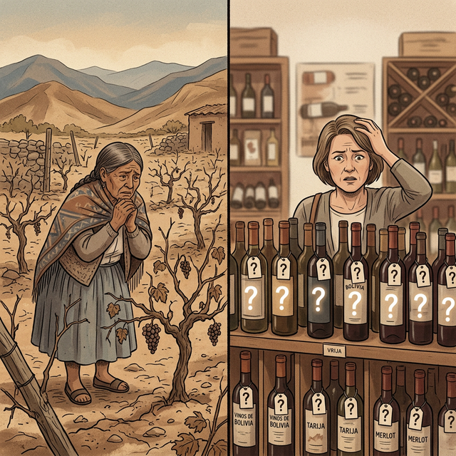
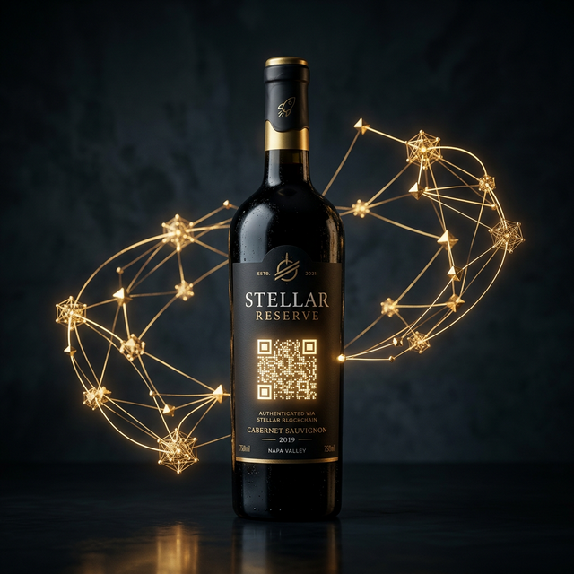
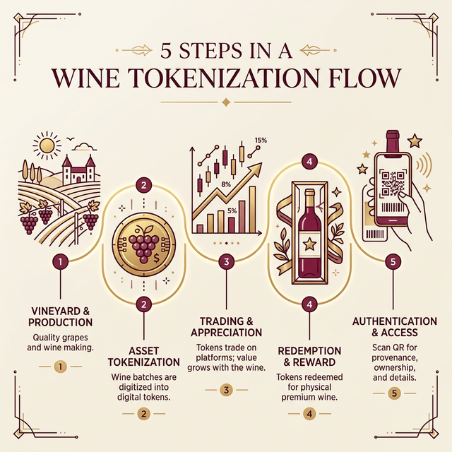
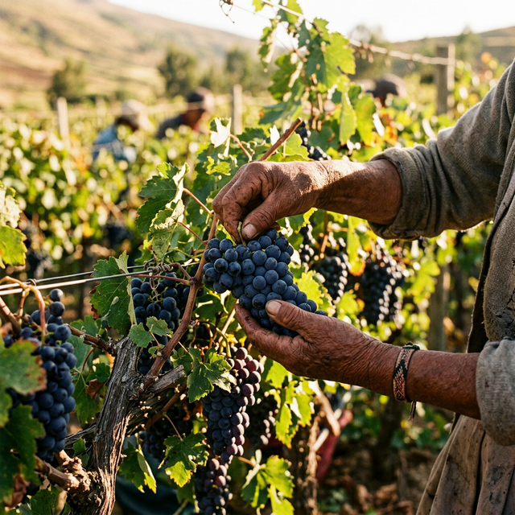

Compra tokens que representan botellas reales de vino boliviano. Financia la producción. Observa cómo crece su valor. Redime tu botella.
Red
Stellar Network
Activo
1 Token = 1 Botella
Origen
Samaipata, Bolivia
Modelo
Non-Custodial
Los viñedos pequeños y medianos en Bolivia dependen de intermediarios, enfrentan costos financieros altos y no pueden vender su producción antes de embotellar. Esto limita su crecimiento y los deja vulnerables ante cada temporada.
Los consumidores pagan el precio final sin beneficiarse de la apreciación del producto. No pueden verificar el origen, el proceso de producción ni la autenticidad de lo que compran. La cadena de valor es opaca.
Los viñedos no acceden a capital antes de la cosecha
Múltiples intermediarios encarecen el producto final
El consumidor no puede verificar origen ni autenticidad

DRINKS ON CHAIN convierte botellas reales de vino en activos digitales sobre la blockchain de Stellar. Cada token es respaldado 1:1 por una botella producida por Viñedo 1970 en Samaipata, Bolivia.

Compra tokens durante la fase de producción a precio preferencial. Financia directamente al viñedo sin intermediarios.
Cada botella tiene un QR que enlaza a su historial completo en Stellar: origen, producción, transferencias y autenticidad.
Cuando estés listo, canjea tu token por una botella física en el viñedo o puntos autorizados. El token se retira de circulación.
Viñedo 1970 crea un activo nativo en Stellar. Cada token representa una botella real de vino en producción.
Adquiere tokens a precio preferencial usando USDC. Tu compra financia directamente la producción y embotellado.
A medida que avanza la producción, el valor de referencia de tu token aumenta por hitos completados.
Presenta tu token en el viñedo o un punto autorizado. Recibes tu botella física y el token se quema (sale de circulación).
Cada botella incluye un código QR. Escanéalo para ver el historial completo: hash de transacción, metadata y cadena de transferencias.

Cada transacción es verificable en la blockchain de Stellar.
Sin custodia de terceros. Sin opacidad. Sin letra pequeña.
Enclavado en los valles de Samaipata, a 1.750 metros sobre el nivel del mar, Viñedo 1970 produce vino artesanal con uvas cultivadas en uno de los terroirs más singulares de Sudamérica.
Con décadas de tradición vinícola, el viñedo combina métodos ancestrales con innovación. DRINKS ON CHAIN es el puente entre esa tradición y la tecnología blockchain, permitiendo que el mundo participe directamente en cada cosecha.
Este proyecto nace para demostrar que la tokenización de activos reales no es solo teoría: es una herramienta concreta para financiar, transparentar y democratizar el acceso a productos con denominación de origen.

Usamos la infraestructura de Stellar Network porque ofrece transacciones rápidas, de bajo costo y con el estándar de seguridad que los activos reales requieren.
Los tokens son activos nativos de la red, no smart contracts complejos. Esto garantiza velocidad, bajo costo y compatibilidad con todo el ecosistema Stellar.
Nunca tocamos tus llaves privadas. El backend construye la transacción (XDR), pero solo tú firmas desde tu wallet personal (Freighter, Lobstr o Albedo).
Los pagos de pre-venta están asegurados mediante Trustless Work SDK. Fondos liberados por hitos verificables, no por confianza ciega.
Cada activo incluye metadata vinculada: varietal, cosecha, lote, proceso de producción. Todo verificable y público siguiendo estándares SEP-1.
Wallets compatibles
El modelo de DRINKS ON CHAIN es replicable. Cualquier producto con denominación de origen puede beneficiarse de la tokenización.
Yungas, Bolivia
Alto Beni, Bolivia
Cualquier origen verificable
DRINKS ON CHAIN es una infraestructura, no solo un producto. Estamos construyendo el puente entre los productos reales de Latinoamérica y la economía digital global.
La pre-venta tiene cupo limitado. Cada token es una botella real, y cada cosecha es única.